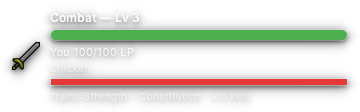
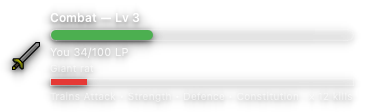
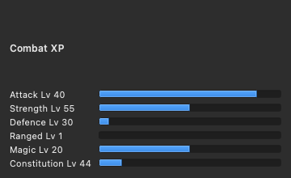

All eleven asks from the plan are built, tested, and committed to main across four staged commits. This is the after-the-fact record: what shipped, where it differs from the plan, and the verification behind it. HUD images below are real offscreen Qt renders of the shipped widget in dark mode, not mockups.



palette(text),
so they stay legible in dark mode (the recurring palette(mid) trap avoided).The plan's two-bar + XP-chip mockup shipped almost exactly. One refinement: the HUD names the trained skills as words (Trains Attack • Constitution) rather than coloured ATK/HP pills — clearer at the HUD's small size and it survives theme changes without a custom palette.
logic_pure.py; the old kill-and-break
is gone. 1b1157fkills for the post-review message.combat_hud_state_pure → chip line in set_data. 1b1157f / 623c915enemy_progress bar in ReviewHUD; state from
combat_hud_state_pure. 623c915combat_attack_style_trained_skills_pure — single source shared with
the style combo. 623c915_build_combat_skill_bars reusing
compute_level_progress. 841fb55hud-right anchor places the button beside the centered HUD, level
with it — and it is now the default position.build_reviewer_js (translateX(270px), bottom 72px) +
Settings radio + config validation. 841fb55died signal that drives a notice.handle_combat_answer. 1698795_combat_should_auto_flee; scoped off inside quest
combat. 1698795combat_attack_style_trained_skills_pure source as the HUD. 841fb55COMBAT_REST_FULL_HEAL_REVIEWS), then a slow
5 LP/review trickle (NATURAL_COMBAT_RECOVERY_LIFEPOINTS) — not the old
instant +100.apply_safe_combat_recovery_pure. 1698795set_data around
combat_hud_state_pure.hud-right anchor (new default), style-combo XP labels,
per-skill XP bars on the stats screen.Automated — full suite green:
895 tests · 0 failures · 180s under
QT_QPA_PLATFORM=offscreen. New coverage this overhaul:
combat_attack_style_trained_skills_pure (style→skills, incl. fallback),
combat_hud_state_pure (full/wounded/carried/kill-count), and the
hud-right JS-injection contract (offset + unknown-value fallback).
Visual — offscreen Qt renders of the shipped
ReviewHUD and the combat XP bars (the three images above), following the project's
offscreen-screenshot rule: show() → resize() → several
processEvents() before grab(), with geometry probes trusted over pixels.
Rendered against a Fusion dark palette to confirm dark-mode contrast.
Confirmed by probe — player/enemy bar fills track LP exactly (full 100%, wounded 34%, carried enemy 12%); the chip line switches skills per style (aggressive→Strength, controlled→all four, defensive→Defence); kill count is singular/plural aware.
Next, and only now that the combat pass is done: the deferred one-time Stronghold of Security activity — a standalone 4-step, no-combat run rewarding 10,000 coins and a one-time choice of Fancy or Fighting boots (both zero-bonus cosmetics to be added as equipment).